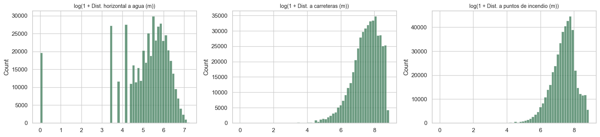
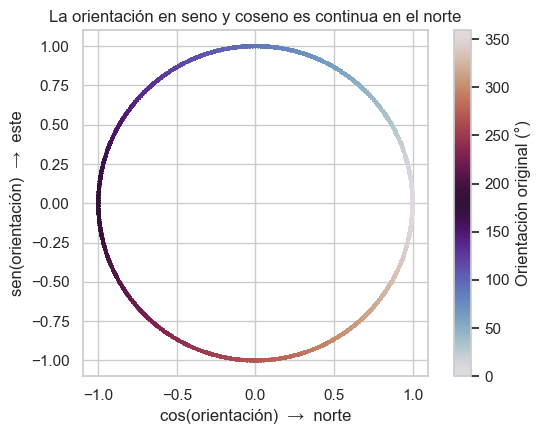

2.9 Preprocesamiento#
Todo el preprocesamiento se implementa dentro de un Pipeline de scikit-learn. Así, cualquier parámetro aprendido de los datos (medias y desviaciones del escalado) se estima solo con la porción de entrenamiento de cada pliegue de validación cruzada, y el conjunto de prueba se transforma con los parámetros aprendidos en entrenamiento, sin intervenir en su estimación.
Show code cell source
import warnings
warnings.filterwarnings("ignore")
import numpy as np
import pandas as pd
import matplotlib.pyplot as plt
import seaborn as sns
from sklearn import set_config
from _utils import (
DISPLAY_NAMES, ENG_NUM_COLS, LOG_COLS, NUM_COLS, build_logreg, engineer_features,
load_covertype, split_covertype,
)
sns.set_theme(style="whitegrid", context="notebook")
set_config(display="diagram")
df, X, y = load_covertype()
X_train, X_test, y_train, y_test = split_covertype(X, y)
Decisiones y hallazgos que las motivan#
Paso |
Decisión |
Hallazgo del EDA que la motiva |
|---|---|---|
Imputación |
No se imputa |
No hay valores faltantes ni códigos centinela (sección 1.8) |
Valores atípicos |
Se conservan todos |
Son valores físicamente válidos y se concentran en las clases minoritarias (secciones 1.8 y 2.4) |
Orientación |
Se sustituye por su seno y su coseno |
Es una variable circular: 0° y 360° son la misma dirección (secciones 1.8 y 2.2) |
Distancias horizontales |
Transformación \(\log(1 + x)\) |
Asimetría positiva y colas derechas largas (sección 2.2) |
Distancia euclidiana al agua |
Nueva variable: \(\sqrt{d_h^2 + d_v^2}\) |
Correlación moderada entre distancia horizontal y vertical (sección 2.3) |
Elevación relativa al agua |
Nueva variable: elevación menos distancia vertical |
La elevación es la variable más informativa; la altitud de la fuente de agua más cercana describe la posición en la cuenca (secciones 2.3 y 2.5) |
Escalado |
|
Las escalas son muy distintas (grados, metros e índices de 0 a 255), y la regularización de la regresión logística es sensible a la escala |
Variables categóricas |
Se conservan las 44 indicadoras one-hot originales, sin escalar |
Ya vienen codificadas y son consistentes (sección 1.8) |
Categorías raras |
Se conservan sin agrupar |
Los suelos raros se asocian con clases distintas; la regularización L2 controla sus coeficientes (sección 2.2) |
Multicolinealidad |
Se conservan los tres índices de sombreado |
Colinealidad alta (VIF de 38 a 144) que la regularización L2 controla; se advierte al interpretar coeficientes (sección 2.3) |
Desbalance |
|
Razón de desbalance de 103 a 1 (sección 2.1) |
Todas las transformaciones de ingeniería de variables son funciones fijas (seno, coseno, logaritmo, sumas y restas), sin parámetros aprendidos de los datos, por lo que no pueden introducir fuga. El único paso con parámetros aprendidos es el escalado, y se ajusta dentro del Pipeline.
Efecto de las transformaciones#
Show code cell source
X_eng = engineer_features(X_train)
comparacion = pd.DataFrame(
{
"Asimetría original": X_train[LOG_COLS].skew(),
"Asimetría con log(1 + x)": X_eng[LOG_COLS].skew(),
}
).round(2)
comparacion.index = [DISPLAY_NAMES[c] for c in comparacion.index]
fig, axes = plt.subplots(1, 3, figsize=(16, 3.8))
for ax, col in zip(axes, LOG_COLS):
sns.histplot(X_eng[col], bins=60, ax=ax, color="#3b7a57")
ax.set_title(f"log(1 + {DISPLAY_NAMES[col]})", fontsize=10)
ax.set_xlabel("")
plt.tight_layout()
plt.show()
comparacion

| Asimetría original | Asimetría con log(1 + x) | |
|---|---|---|
| Dist. horizontal a agua (m) | 1.14 | -2.14 |
| Dist. a carreteras (m) | 0.71 | -1.00 |
| Dist. a puntos de incendio (m) | 1.29 | -0.80 |
La transformación logarítmica elimina la cola derecha de las distancias, aunque genera asimetría negativa en la distancia horizontal al agua por la acumulación de celdas junto a un curso de agua (distancia cero). Por esa razón, en el capítulo 3 la ingeniería de variables se trata como un hiperparámetro más: se comparan por validación cruzada un preprocesamiento básico (solo escalado) y el preprocesamiento con ingeniería de variables, y se elige el que mejor desempeño obtenga, en lugar de asumir que la transformación ayuda.
Show code cell source
fig, ax = plt.subplots(figsize=(6, 4.5))
muestra = X_eng.sample(20000, random_state=42)
sc = ax.scatter(muestra["Aspect_cos"], muestra["Aspect_sin"], c=X_train.loc[muestra.index, "Aspect"],
cmap="twilight", s=3)
ax.set_xlabel("cos(orientación) → norte")
ax.set_ylabel("sen(orientación) → este")
ax.set_title("La orientación en seno y coseno es continua en el norte")
ax.set_aspect("equal")
fig.colorbar(sc, label="Orientación original (°)")
plt.tight_layout()
plt.show()

Con la representación en seno y coseno, una ladera orientada a 359° y otra a 1° quedan una junto a la otra, como corresponde, en lugar de quedar en los extremos opuestos de la escala.
Pipeline resultante#
Show code cell source
pipeline = build_logreg(engineered=True)
pipeline
Pipeline(steps=[('prep',
Pipeline(steps=[('features',
FunctionTransformer(func=<function engineer_features at 0x0000025F86984550>)),
('scale',
ColumnTransformer(transformers=[('num',
StandardScaler(),
['Elevation',
'Slope',
'Horizontal_Distance_To_Hydrology',
'Vertical_Distance_To_Hydrology',
'Horizontal_Distance_To_Roadways',
'Hillshade_9am',
'Hillshade_Noon',
'H...
'Soil_Type_8',
'Soil_Type_9',
'Soil_Type_10',
'Soil_Type_11',
'Soil_Type_12',
'Soil_Type_13',
'Soil_Type_14',
'Soil_Type_15',
'Soil_Type_16',
'Soil_Type_17',
'Soil_Type_18',
'Soil_Type_19',
'Soil_Type_20',
'Soil_Type_21',
'Soil_Type_22',
'Soil_Type_23',
'Soil_Type_24',
'Soil_Type_25',
'Soil_Type_26', ...])]))])),
('clf', LogisticRegression(max_iter=2000, random_state=42))])In a Jupyter environment, please rerun this cell to show the HTML representation or trust the notebook. On GitHub, the HTML representation is unable to render, please try loading this page with nbviewer.org.
Pipeline(steps=[('prep',
Pipeline(steps=[('features',
FunctionTransformer(func=<function engineer_features at 0x0000025F86984550>)),
('scale',
ColumnTransformer(transformers=[('num',
StandardScaler(),
['Elevation',
'Slope',
'Horizontal_Distance_To_Hydrology',
'Vertical_Distance_To_Hydrology',
'Horizontal_Distance_To_Roadways',
'Hillshade_9am',
'Hillshade_Noon',
'H...
'Soil_Type_8',
'Soil_Type_9',
'Soil_Type_10',
'Soil_Type_11',
'Soil_Type_12',
'Soil_Type_13',
'Soil_Type_14',
'Soil_Type_15',
'Soil_Type_16',
'Soil_Type_17',
'Soil_Type_18',
'Soil_Type_19',
'Soil_Type_20',
'Soil_Type_21',
'Soil_Type_22',
'Soil_Type_23',
'Soil_Type_24',
'Soil_Type_25',
'Soil_Type_26', ...])]))])),
('clf', LogisticRegression(max_iter=2000, random_state=42))])Pipeline(steps=[('features',
FunctionTransformer(func=<function engineer_features at 0x0000025F86984550>)),
('scale',
ColumnTransformer(transformers=[('num', StandardScaler(),
['Elevation', 'Slope',
'Horizontal_Distance_To_Hydrology',
'Vertical_Distance_To_Hydrology',
'Horizontal_Distance_To_Roadways',
'Hillshade_9am',
'Hillshade_Noon',
'Hillshade_3pm',
'Horizonta...
'Soil_Type_3', 'Soil_Type_4',
'Soil_Type_5', 'Soil_Type_6',
'Soil_Type_7', 'Soil_Type_8',
'Soil_Type_9',
'Soil_Type_10',
'Soil_Type_11',
'Soil_Type_12',
'Soil_Type_13',
'Soil_Type_14',
'Soil_Type_15',
'Soil_Type_16',
'Soil_Type_17',
'Soil_Type_18',
'Soil_Type_19',
'Soil_Type_20',
'Soil_Type_21',
'Soil_Type_22',
'Soil_Type_23',
'Soil_Type_24',
'Soil_Type_25',
'Soil_Type_26', ...])]))])FunctionTransformer(func=<function engineer_features at 0x0000025F86984550>)
ColumnTransformer(transformers=[('num', StandardScaler(),
['Elevation', 'Slope',
'Horizontal_Distance_To_Hydrology',
'Vertical_Distance_To_Hydrology',
'Horizontal_Distance_To_Roadways',
'Hillshade_9am', 'Hillshade_Noon',
'Hillshade_3pm',
'Horizontal_Distance_To_Fire_Points',
'Aspect_sin', 'Aspect_cos',
'Dist_Hydrology_Euclid',
'Elevation_Minus_VDH']),
('bin', 'pas...
'Soil_Type_1', 'Soil_Type_2', 'Soil_Type_3',
'Soil_Type_4', 'Soil_Type_5', 'Soil_Type_6',
'Soil_Type_7', 'Soil_Type_8', 'Soil_Type_9',
'Soil_Type_10', 'Soil_Type_11',
'Soil_Type_12', 'Soil_Type_13',
'Soil_Type_14', 'Soil_Type_15',
'Soil_Type_16', 'Soil_Type_17',
'Soil_Type_18', 'Soil_Type_19',
'Soil_Type_20', 'Soil_Type_21',
'Soil_Type_22', 'Soil_Type_23',
'Soil_Type_24', 'Soil_Type_25',
'Soil_Type_26', ...])])['Elevation', 'Slope', 'Horizontal_Distance_To_Hydrology', 'Vertical_Distance_To_Hydrology', 'Horizontal_Distance_To_Roadways', 'Hillshade_9am', 'Hillshade_Noon', 'Hillshade_3pm', 'Horizontal_Distance_To_Fire_Points', 'Aspect_sin', 'Aspect_cos', 'Dist_Hydrology_Euclid', 'Elevation_Minus_VDH']
StandardScaler()
['Wilderness_Area_1', 'Wilderness_Area_2', 'Wilderness_Area_3', 'Wilderness_Area_4', 'Soil_Type_1', 'Soil_Type_2', 'Soil_Type_3', 'Soil_Type_4', 'Soil_Type_5', 'Soil_Type_6', 'Soil_Type_7', 'Soil_Type_8', 'Soil_Type_9', 'Soil_Type_10', 'Soil_Type_11', 'Soil_Type_12', 'Soil_Type_13', 'Soil_Type_14', 'Soil_Type_15', 'Soil_Type_16', 'Soil_Type_17', 'Soil_Type_18', 'Soil_Type_19', 'Soil_Type_20', 'Soil_Type_21', 'Soil_Type_22', 'Soil_Type_23', 'Soil_Type_24', 'Soil_Type_25', 'Soil_Type_26', 'Soil_Type_27', 'Soil_Type_28', 'Soil_Type_29', 'Soil_Type_30', 'Soil_Type_31', 'Soil_Type_32', 'Soil_Type_33', 'Soil_Type_34', 'Soil_Type_35', 'Soil_Type_36', 'Soil_Type_37', 'Soil_Type_38', 'Soil_Type_39', 'Soil_Type_40']
passthrough
LogisticRegression(max_iter=2000, random_state=42)
El Pipeline tiene dos etapas: el preprocesamiento (ingeniería de variables seguida de un ColumnTransformer que escala las 13 variables numéricas y deja pasar las 44 indicadoras) y el clasificador. Al entrenar, el modelo recibe 57 predictoras:
Show code cell source
print(f"Numéricas escaladas ({len(ENG_NUM_COLS)}): {', '.join(ENG_NUM_COLS)}")
print("Indicadoras sin transformar: 4 de área silvestre y 40 de tipo de suelo")
Numéricas escaladas (13): Elevation, Slope, Horizontal_Distance_To_Hydrology, Vertical_Distance_To_Hydrology, Horizontal_Distance_To_Roadways, Hillshade_9am, Hillshade_Noon, Hillshade_3pm, Horizontal_Distance_To_Fire_Points, Aspect_sin, Aspect_cos, Dist_Hydrology_Euclid, Elevation_Minus_VDH
Indicadoras sin transformar: 4 de área silvestre y 40 de tipo de suelo